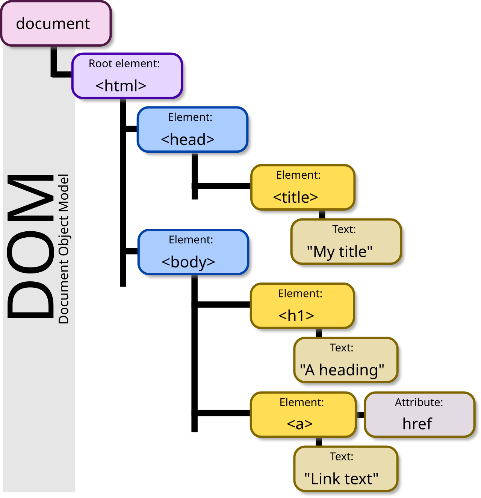
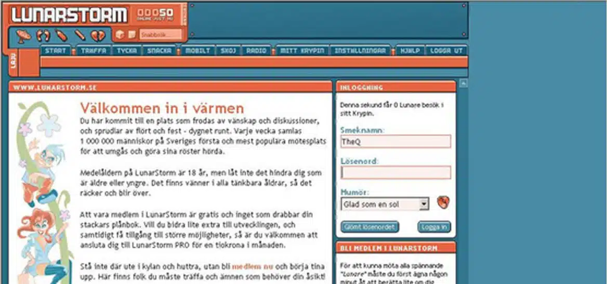

HTMLs Historia
Dåtid, nutid och framtid
Hela HMTLs Tidslinje
- 1960-talARPANET
- 1991WWW & HTML
- 1994W3C grundas
- 1995JavaScript
- 1996CSS 1
- 2000-talSociala medier
- 2004HTML5 påbörjas
- 2014HTML5 lanseras
- 2019WHATWG & W3C
Varifrån kommer Internet?
Internet har sina rötter i militära projekt, som t.ex. ARPANET, vilket utvecklades under 1960-talet av det amerikanska försvaret. Syftet var att skapa ett robust kommunikationssystem som kunde fungera även om delar av nätverket gick ner. Detta lade grunden för det moderna internet.
HTMLs födelse
Webben föddes i början av 1990-talet när Tim Berners-Lee, en brittisk ingenjör, utvecklade World Wide Web (WWW). Han arbetade på CERN, där han ville skapa ett sätt för forskare att enkelt dela och få tillgång till information över internet. Hans fokus var att bygga ett system där dokument kunde kopplas samman genom länkar, vilket gjorde det lättare att navigera mellan olika sidor och resurser. W3C (World Wide Web Consortium) grundades 1994 och tog senare över ansvaret för att utveckla och standardisera webben. Detta säkerställde att den kunde växa och utvecklas på ett enhetligt sätt.
Vad är World Wide Web?
World Wide Web (eller WWW), är ett system av webbplatser och webbsidor som är kopplade genom hyperlänkar och som nås via internet. Medan internet är infrastrukturen som möjliggör dataöverföring, är WWW det visuella gränssnittet av information som användare interagerar med, vilket gör det möjligt att navigera och interagera med innehåll online.
Vad är W3C?
Organisationen W3C (World Wide Web Consortium) samlar företag, forskningsinstitutioner och andra intressenter för att skapa riktlinjer och specifikationer för webbstandarder, såsom HTML, CSS och andra webbrelaterade teknologier. Genom att sätta standarder hjälper W3C till att främja innovation och säkerställa att webben fortsätter att utvecklas på ett sätt som är kompatibelt och användarvänligt.
JavaScript och DOM
För att göra webbsidor mer interaktiva började utvecklare runt 1995 använda JavaScript, ett programmeringsspråk som gör det möjligt att skapa dynamiska element på webbplatser. JavaScript fungerar tillsammans med DOM (Document Object Model), som är en struktur som representerar HTML-dokumentet och gör det möjligt för JavaScript att manipulera innehållet, stilen och strukturen på en webbsida.

Tidigt 2000-tal
Under tidigt 2000-tal fortsatte webben att utvecklas snabbt. Nya teknologier och standarder började dyka upp, vilket gjorde det möjligt att bygga mer komplexa och interaktiva webbplatser. Detta var också perioden när sociala medier började ta form, vilket förändrade hur människor interagerade online och delade information.

HTML5 och dess utveckling
HTML5 började utvecklas 2004 och lanserades officiellt 2014, vilket markerade en stor uppgradering av språket. Denna version gjorde det möjligt för utvecklare att skapa mer avancerade och användarvänliga webbapplikationer utan behov av externa plugins. HTML5 inkluderade nya funktioner som video- och ljudstöd, geolocation och bättre formulärhantering.
Utvecklingen av webben från 2010 till 2019
Mellan 2010 och 2019 fortsatte webben att växa och förändras dramatiskt. Under denna period ökade användningen av mobila enheter, vilket ledde till en stark efterfrågan på responsiv webbdesign för att anpassa webbplatser till olika skärmstorlekar. Dessutom blev CSS3 populärt, vilket gjorde det möjligt för utvecklare att skapa mer visuellt tilltalande och interaktiva webbplatser med avancerade animationer och layouter. JavaScript-bibliotek och ramverk som jQuery, Angular och React blev också vanliga och förenklade skapandet av komplexa webbapplikationer, inklusive så kallade single-page applications (SPA), där hela sidan laddas dynamiskt utan att behöva ladda om webbläsaren.
År 2019 undertecknade WHATWG (Web Hypertext Application Technology Working Group) och W3C ett avtal om att samarbeta kring HTML5. Detta samarbete syftade till att säkerställa en enhetlig standard för HTML, vilket är viktigt för att webben ska fungera smidigt och effektivt över olika plattformar och enheter.
Framtidens HTML
Framtidens HTML fortsätter att utvecklas i takt med teknikens framsteg. Artificiell intelligens och maskininlärning integreras allt mer i webbutveckling, vilket gör det möjligt att skapa mer personliga och adaptiva användarupplevelser. Nya HTML-element och API:er utvecklas kontinuerligt för att stödja teknologier som AR (augmented reality) och VR (virtual reality), vilket öppnar upp för helt nya sätt att interagera med webbinnehåll. Tillgänglighet och prestanda står i fokus, med standarder som säkerställer att webben förblir öppen och användbar för alla, oavsett enhet eller funktionsnedsättning. WebAssembly gör det möjligt att köra kod skriven i andra språk direkt i webbläsaren med nästan nativ prestanda, vilket ytterligare utvidgar vad som är möjligt på webben. En sak är säker HTML kommer fortsätta vara grunden för en öppen, tillgänglig och innovativ webb.